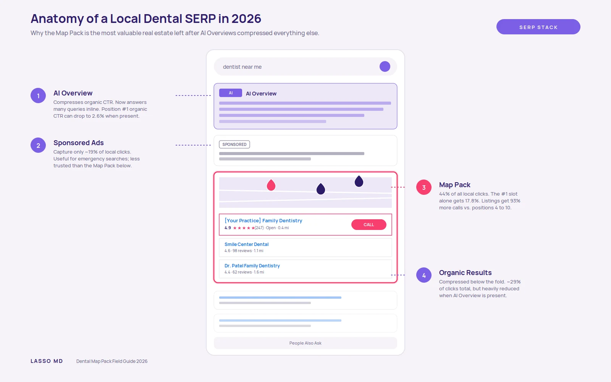
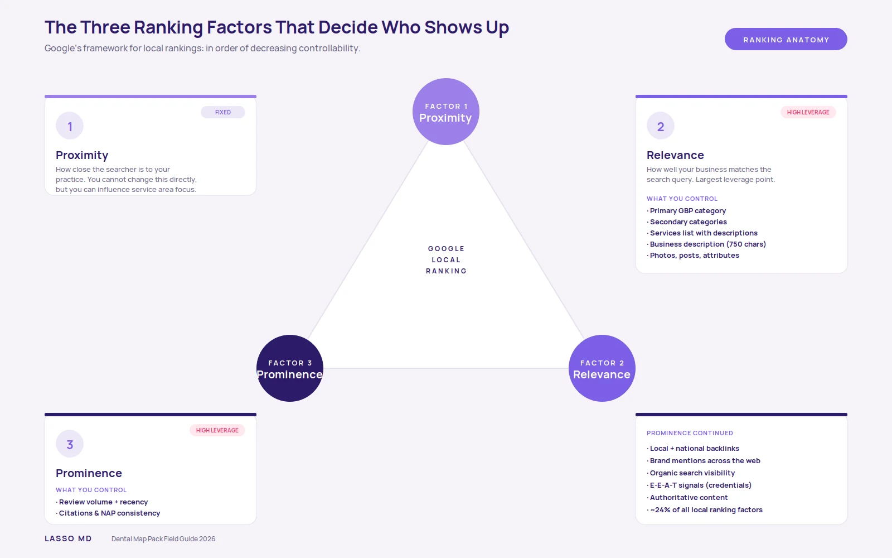
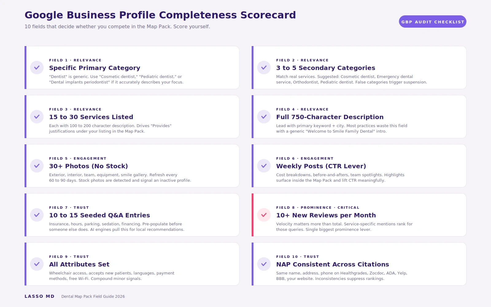
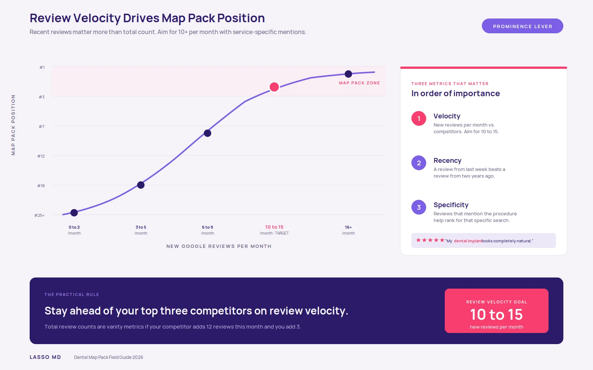

If you run a independent clinic and you are not in the top three Map Pack results for "clinician near me," "[your city] clinician," or your top procedural keywords, you are losing roughly half of all qualified local search traffic before any of your other marketing matters. The Local 3-Pack captures 44% of all local search clicks, compared to 29% for organic results below it and 19% for paid ads [1]. The top spot alone gets 17.6% to 17.8% of all clicks, with positions two and three taking another 30% combined [2].
In 2026, that competition has gotten harder. Google's AI Overviews now occupy the top of many search results, and when they appear, the click-through rate for the #1 organic result can drop to as low as 2.6% [3]. That makes the Map Pack more important, not less. It is the one block of search real estate that AI Overviews have not absorbed, and it is still where high-intent patients tap to call, get directions, or book.
This field guide is a step-by-step system for actually getting your independent clinic into the Map Pack and keeping it there. It covers what the Map Pack is in 2026, the three ranking factors that decide who shows up, how to audit your current position, the Google Business Profile optimizations that move the needle, the role of reviews, citations, schema, and multi-location strategy, and how to measure results with closed-loop attribution. It is the playbook our team uses inside ClinicSoftware.ai's clinic SEO services engagements, written so you can run it yourself.
- What the Map Pack Is in 2026
- The Three Ranking Factors
- Audit First: Where You Stand Today
- Google Business Profile: Highest-Leverage Asset
- Reviews: The Biggest Prominence Signal
- Citations, NAP, and Local Authority
- On-Page Local SEO and Schema
- Multi-Location and Service Area Strategy
- Measuring Map Pack Performance
- Common Mistakes That Tank Rankings
What the Map Pack Is in 2026 (and Why AI Overviews Made It Even More Valuable)
The Map Pack (also called the Local Pack or Local 3-Pack) is the block of three local business listings with a map preview that appears at the top of Google search results when a query has local intent. For independent clinics, almost every meaningful query (general clinicianry, emergency, implants, Invisalign, pediatric, cosmetic) returns a Map Pack.
In 2026, the SERP for a typical "clinician near me" query stacks roughly like this:
- AI Overview (often, on mobile especially)
- Sponsored ads (one to four results)
- Local 3-Pack (three businesses + map)
- Organic results
- People Also Ask

Anatomy of a 2026 clinic search SERP. The Map Pack is the one block AI Overviews have not absorbed.
Three things have changed in the last 18 months that make Map Pack ranking even more strategically important than it was in 2024.
AI Overviews compress organic. When AI Overview appears, position #1 organic CTR has fallen as low as 2.6% in some studies [3]. That click traffic does not vanish. Much of it shifts to the Map Pack, which still feels concrete and trustworthy to searchers. Practices that win the Map Pack are absorbing some of the click volume that used to go to high-ranking organic results.
Mobile dominates. Roughly 90% of traffic to local business listings now comes from mobile. On a phone screen, the Map Pack visually dominates, and CTAs (call, directions, website) are right inside the listing. The Map Pack is essentially the entire above-the-fold experience for most local clinic searches on mobile.
AI search engines pull from GBP. ChatGPT, Perplexity, Gemini, and similar tools increasingly pull local business data directly from Google Business Profile when answering "best clinician in [city]" or "clinician who does Invisalign near me" prompts. The same GBP optimizations that win the Map Pack now also feed the AI search layer.
The bottom line: in 2026, Map Pack visibility is a force multiplier. It captures direct local clicks, absorbs traffic AI Overviews divert away from organic, and feeds the AI answer engines simultaneously. 76% of mobile local searchers visit a business within 24 hours of their search [4].
The Three Ranking Factors That Decide Who Shows Up
Google has been transparent about what determines local ranking [5]. There are three factors, and they apply in order of decreasing controllability.

Google's three local ranking factors and what controls each one.
| FACTOR | WHAT IT MEANS | CONTROLLABILITY | LEVERS YOU OWN |
|---|---|---|---|
| Proximity | How close the searcher is to your practice | Low | Service area selection, content geography |
| Relevance BIGGEST LEVER | How well your business matches the query | High | GBP categories, services, description, posts, reviews keywords |
| Prominence | How well-known and trusted your practice is | Medium-High | Reviews, citations, backlinks, organic visibility, E-E-A-T |
Most independent clinics fixate on proximity, which they cannot control, while ignoring the relevance and prominence levers, which they can. The exercises in this guide target relevance and prominence specifically, since those are where the work pays off.
Audit First: Where Your Practice Stands Today
Before optimizing anything, you need a baseline. A 60-minute audit will tell you which of the next sections actually matter for your situation.
By the end of this audit, you should have a written list of the 10 to 20 specific things that are holding your practice back. The rest of this guide tells you which to fix first.
Google Business Profile: The Highest-Leverage Asset You Own
Your Google Business Profile (GBP) is the single biggest controllable variable in local rankings. Practices we audit at ClinicSoftware.ai typically have 5 to 10 GBP issues that, once fixed, produce measurable ranking improvements within 4 to 8 weeks.

A GBP completeness scorecard. Use it to grade your current profile before optimizing.
Primary and secondary categories
Your primary category is the most important relevance signal in your entire GBP. "Clinician" is generic and competes with every other clinician in your city. If your practice has a meaningful specialty or focus, choose a more specific primary category instead. Options to consider:
- Cosmetic clinician
- Pediatric clinician
- Orthodontist
- Periodontist
- Endodontist
- Oral surgeon
- Clinic implants periodontist
- Emergency clinic service
- Denture care center
Add three to five secondary categories that match services you genuinely provide. Be honest. False categories are a trigger for GBP suspension in 2026.
Services
List every service individually rather than grouping them into "general clinicianry." Each service entry can include a description (use this; most practices leave it blank). Aim for 15 to 30 services, each with 100 to 200 characters of description.
Service-level entries also drive Google's "Provides" justifications, the small "Provides: clinic implants" badges that show up under your listing in the Map Pack. These justifications increase click-through.
Description
You have 750 characters. Use them. Lead with your primary keyword and city in the first sentence, describe what makes your practice different (technology, accreditations, specialty), and end with a soft CTA. Skip the fluff. No "Welcome to Smile Family Clinic" intros.
Photos
Upload at least 30 photos, ideally 50+, in the following categories:
- Exterior shots (storefront, signage)
- Interior (waiting area, operatories, sterilization area)
- Team (doctor, hygienists, front desk)
- Equipment (CBCT, intraoral scanner, in-house lab)
- Smile gallery (with patient consent)
Avoid stock photos. Google can detect them and they signal an inactive or new profile. Re-upload fresh photos every 60 to 90 days.
Posts
Posts do not directly move rankings, but they affect click-through rate when a post highlight appears in the Map Pack. Post weekly with patient-facing content: cost-of-procedure breakdowns, before-and-afters, team spotlights, seasonal hygiene reminders, new technology announcements. For content ideas, see ClinicSoftware.ai's 24 Best Clinic Growth Social Media Ideas for 2026.
Q&A
The GBP Q&A section is community-editable. If you have not seeded it, somebody else might. Pre-populate with 10 to 15 of the questions your front desk hears most often: insurance accepted, hours, parking, pediatric services, sedation options, financing. Answer each in two to three sentences. This is also a top spot to AI-optimize, since answer engines pull Q&A content.
Attributes and amenities
Set every relevant attribute: wheelchair accessible, accepts new patients, women-owned business (if applicable), languages spoken, payment methods, free Wi-Fi. These are minor relevance signals individually but compound.
For a deeper look at how GBP optimization plays into the broader AI search ecosystem, see ClinicSoftware.ai's Mastering AI Search Visibility for Clinic Teams and AI, GEO, AEO, and LLMO: How ClinicSoftware.ai Is Future-Proofing Clinic SEO in 2026.
Reviews: The Single Biggest Prominence Signal
Reviews are roughly 24% of local search ranking factors [1]. That makes them the single largest prominence lever you have. Practices with strong review programs consistently outrank technically optimized practices with weaker review programs.

Review velocity vs. ranking position. Recency outweighs total count.
Three review metrics matter, in order:
- Velocity. New reviews per month. Aim for 10 to 15 in a typical solo or small-group practice. Practices growing review count rapidly almost always see ranking improvements within 60 days.
- Recency. A review from last week carries more weight than a review from two years ago. This is why a practice with 80 reviews and 5 new ones this month often outranks one with 400 reviews and zero recent activity.
- Quality and specificity. Reviews that mention specific procedures (clinic implants, Invisalign, extraction, root canal, cleaning) help you rank for those service-specific queries. Generic five-star reviews help less than detailed reviews that name the service.
A practice with 80 reviews and 5 new ones this month often outranks one with 400 reviews and zero recent activity. Velocity beats volume.
Practical tactics that move review counts:
- Automated post-visit text. Send a request 60 to 90 minutes after the appointment. Include a direct Google review link. Follow up once if no response within 48 hours. Practices implementing automated post-visit SMS typically see review velocity 3x to 5x baseline within 30 days.
- Review prompts that mention the procedure. "If you have a moment, we would love a Google review. Sharing what type of treatment you had, like clinic implants or Invisalign, helps other patients find us." This is HIPAA-safe (the patient chooses what to share) and dramatically improves keyword density in reviews.
- Respond to every review within 48 hours. For positive reviews: brief thank-you that mentions the procedure. For negative reviews: never argue clinical detail (HIPAA), acknowledge the experience, invite a private conversation. Response rate is itself a ranking factor.
- Do not buy fake reviews. Google's detection is aggressive in 2026. Fake reviews get removed and listings get suspended. Build legitimately.
For a deeper treatment of reputation as an acquisition channel, see ClinicSoftware.ai's Beyond Reviews: How Reputation Marketing Is Redefining Patient Acquisition in Clinicianry.
Citations, NAP, and Local Authority
Citations are mentions of your business name, address, and phone (NAP) on third-party websites. They are a foundational prominence signal. Inconsistent or missing citations directly suppress local rankings.
The clinic-specific citations every practice should have:
- Healthgrades
- Zocdoc
- ADA Find-a-Clinician
- Yelp
- Better Business Bureau
- Local Chamber of Commerce
- Your state clinic association directory
- Vitals
- WebMD Care
- Google Business Profile (the canonical source)
NAP must match exactly across all of them. "Dr. Sarah Johnson DDS" and "Sarah Johnson Clinicianry" reading as different practices to Google is a real problem we audit constantly. Pick one canonical name and use it everywhere.
For local backlinks (which compound with citations), focus on link sources that reinforce your status as a community fixture rather than chasing generic SEO backlinks:
- Sponsoring a local sports team or community event
- Partnering with local schools for clinic health education days
- Hosting a free implant or consultation day and getting local press coverage
- Joining the local Chamber of Commerce
- Guest posts on local news sites about oral health topics
These are slow to compound but very durable. A single link from a reputable local news site is worth 50 generic directory citations.
On-Page Local SEO and Schema
Your website still matters for Map Pack rankings, primarily as a relevance and prominence signal. The two things to get right:
Service pages. Build a dedicated page for each major service: clinic implants, Invisalign, emergency clinicianry, pediatric, cosmetic, root canals, extractions. Each page should be 1,000 to 1,800 words, include FAQ sections, and target the geographic modifier (your city or service area) at least once in the title, H1, intro paragraph, and meta description. For implant patients specifically, see ClinicSoftware.ai's Clinic Implant Marketing: The Complete 2026 Playbook for a full landing page treatment with the six-zone structure.
Local schema markup. Implement at minimum: LocalBusiness schema (with type Clinician), Service schema for each procedure, FAQPage schema for FAQ blocks, Review schema for testimonials, and Organization schema. Schema is what AI engines like ChatGPT and Perplexity parse to understand your practice. Practices with comprehensive schema are dramatically more visible in AI answer engines.
Core Web Vitals also matter. Target sub-1.5-second load times on mobile, and aim for 90%+ of URLs passing Core Web Vitals. If your site fails these benchmarks, the highest-leverage technical fix is usually image optimization (compressing or converting to WebP/AVIF) and removing unused JavaScript. For the broader website strategy that supports local SEO, see ClinicSoftware.ai's Transform Your Practice with Cutting-Edge Branding and Website Design.
Multi-Location and Service Area Strategy
For practices with multiple locations or DSOs, each location needs its own dedicated GBP listing and its own dedicated landing page. Do not try to rank a single page for "clinician [city A]" and "clinician [city B]." Google will choose one and demote the other.
Each location page should include:
- Unique content (not copy-paste with city swap)
- That location's GBP embed
- That location's specific team, hours, and parking info
- Driving directions from major nearby landmarks
- Patient testimonials specific to that location
- LocalBusiness schema with that location's NAP
For service area expansion (practices that draw patients from outlying suburbs), build "City + Service" combination pages where there is genuine search volume, but never duplicate template content across multiple suburb pages. Google flags those as doorway pages and demotes the entire site. For the full multi-location playbook including network-level strategy, see ClinicSoftware.ai's DSO Marketing 2026 Playbook.
Measuring Map Pack Performance
Three metrics matter for Map Pack performance, in order:
- Local pack visibility. Use a grid-based rank tracker (Local Falcon, BrightLocal Local Search Grid) to see exactly where you rank across geographic points around your service area. A single "I rank #2" report from a single search location is misleading. The grid is what tells the truth.
- GBP Insights. Inside your Google Business Profile, the Performance tab shows discovery searches (people who found you without searching your name) versus direct searches (people who searched your name). It also shows phone calls, direction requests, website clicks, and message volume. Focus on discovery search growth, since that is what local SEO is actually optimizing.
- Calls and bookings tied to GBP source. This is where most practices stop measuring, and it is exactly where the marketing-to-revenue connection breaks. Use dynamic call tracking on your GBP listing, and tie those calls back to actual booked patients and revenue in your PMS.
This is where ClinicSoftwareTM Growth Software closes the loop natively. ClinicSoftware.ai's AI Receptionist and Journey Insights tie GBP source data through to collected revenue, so you can see, in dollars, which Map Pack queries produced your last new-patient case. Online Scheduling on the GBP listing further removes friction between map view and booked appointment.
For the role of front-desk call handling in this funnel (often the bottleneck after the lead arrives), see ClinicSoftware.ai's Unlocking Lead Conversion: How AI Call Grading Transforms Patient Intake. For paid search complementing your local SEO program, see Clinic PPC Campaign Types.
Common Mistakes That Tank Map Pack Rankings
Eight failure modes we audit repeatedly:
- Setting primary GBP category to generic "Clinician" instead of a more specific category that matches the practice's focus.
- Listing fewer than five services (or none with descriptions).
- Letting GBP go three or more months without a new post or photo.
- Stuffing keywords into the business name on GBP. Google detects and demotes this aggressively in 2026.
- Inconsistent NAP across Yelp, Healthgrades, ADA directory, and your website.
- Buying or trading reviews. Detection is aggressive and the penalty is suspension.
- Treating reviews as a passive system rather than actively requesting service-specific feedback after each visit.
- Building a single "Locations" page that lists all offices instead of dedicated location pages with unique content.
Conclusion: The Compound Effect of Doing the Basics Right
Map Pack ranking is not magic. It is the compound effect of doing five things correctly and consistently: a complete and specific GBP, a steady review velocity, consistent NAP across citations, dedicated service and location pages with schema, and a closed-loop measurement layer that ties Map Pack clicks back to actual booked patients.
The practices that compound year over year are the ones that treat all five as a system rather than chasing one tactic at a time. There is no shortcut, but there is no mystery either. The audit at the top of this guide tells you which lever to pull first. The rest is execution discipline.
- The Map Pack captures 44% of local clicks. AI Overviews make it more valuable, not less, by compressing organic CTR and leaving the 3-pack untouched.
- Relevance is your biggest controllable lever. Primary GBP category, services list, description, and review keywords decide most ranking outcomes.
- Review velocity beats review volume. 10 to 15 fresh reviews per month outranks a stale 400-review profile.
- Closed-loop attribution is what proves Map Pack ROI. Tie GBP source data through call tracking and PMS to actual revenue, or you cannot defend the spend.
References
References (5 sources) — click to expand
[1] Local 3-Pack captures 44% of local search clicks; reviews account for approximately 24% of local search ranking factors.
Source: Moz Local Search Ranking Factors.
https://moz.com/local-search-ranking-factors
[2] Position #1 in Google search receives 17.6% to 17.8% of all clicks; positions two and three combine for an additional ~30%.
Source: FirstPageSage Click-Through Rate Study.
https://firstpagesage.com/seo-blog/google-click-through-rates-ctrs-by-ranking-position/
[3] When AI Overviews appear in search results, the click-through rate for the #1 organic position can drop to as low as 2.6%.
Source: Search Engine Land AI Overview Impact Research.
https://searchengineland.com/google-ai-overviews-ctr-impact-research
[4] 76% of consumers who search for something nearby on a smartphone visit a related business within one day.
Source: Think with Google, Mobile Local Search Behavior.
https://www.thinkwithgoogle.com/marketing-strategies/search/mobile-search-consumer-behavior-data/
[5] Google identifies three core factors that determine local search ranking: relevance, distance, and prominence.
Source: Google Search Central, Local Ranking Documentation.
https://support.google.com/business/answer/7091?hl=en